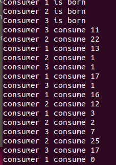

一枚菜鸡工科生
双进程三线程的生产者-消费者问题
关于单独的生产者-消费者问题，网上已经有很多相关示例。今天我们讨论同时存在三个生产者、三个消费者，共用一个固定大小缓冲区的情况。基本结构是：生产者共用一个进程，消费者共用一个进程；生产者和消费者进程中各有三个线程。
首先，我们用共享内存进行两个进程间通信。定义被通信的信号量包括mutex，标志缓冲区大小的full、empty：
sem_init(mutex, 1, 1);//mutex在两个进程的线程间进行共享，初始化为1
sem_init(full, 1, 0);//多进程 中间参数设为1，可以使这个信号量跨进程
sem_init(empty, 1, 20);
同时，我们在头文件定义结构体buffer_s，用于存储当作缓冲区的数组array以及相应索引locate：
typedef struct buffer_s {
int locate; /*生产者的index*/
int array[20]; /*用于保存产品*/
} buffer;
buffer*p;
指向结构体的指针与信号量一起放入共享内存：
mutex=(sem_t*)mmap(NULL,sizeof(sem_t),PROT_READ|PROT_WRITE,MAP_SHARED,fd,0);
full=(sem_t*)mmap(NULL,sizeof(sem_t),PROT_READ|PROT_WRITE,MAP_SHARED,fd,0);
empty=(sem_t*)mmap(NULL,sizeof(sem_t),PROT_READ|PROT_WRITE,MAP_SHARED,fd,0);
p =(buffer*) mmap(NULL, sizeof(buffer), PROT_READ | PROT_WRITE, MAP_SHARED, buffer_fd, 0);//
一个进程产生多线程的方法参考了哲学家进餐问题解析 。
最终执行结果如下：

完整源码见：生产者-消费者(github)